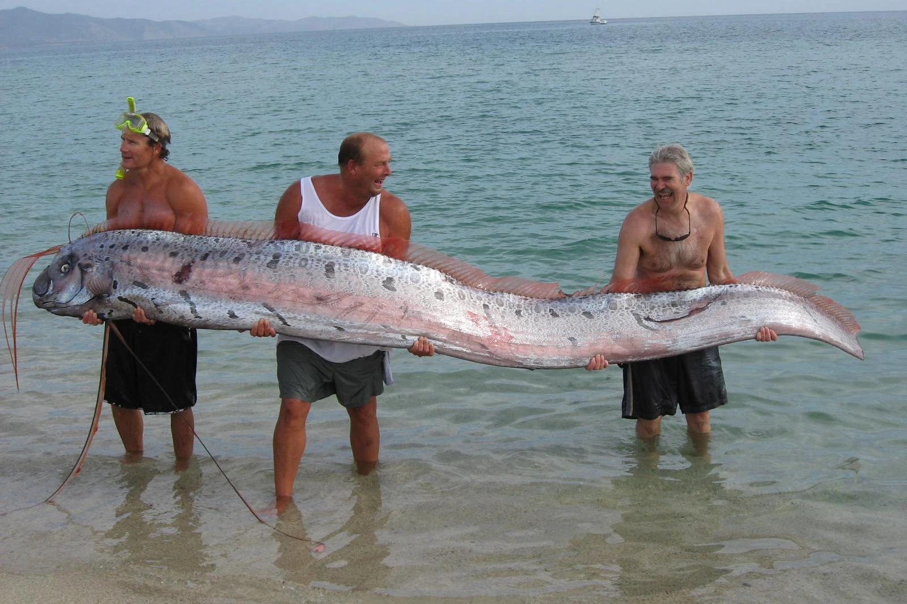

Giant Ocean Creatures
In this section you will be informed about large fish exclusively in Oceans (including Whales) Pictures of the fish that will be showed:
Blue Whale
The blue whale holds the title of the largest animal to ever exist, reaching lengths of up to 30 meters and weighing as much as 200 tons.Despite their enormous size, blue whales feed almost exclusively on tiny shrimp-like creatures. Known for their deep, resonant calls, blue whales can communicate over distances of hundreds of miles. Fun Fact: A blue whale’s heart is the size of a small car and weighs around 400 pounds (180 kilograms)! Even more astonishing, their arteries are so large that a human could theoretically crawl through them. This massive heart pumps blood through their enormous bodies, supporting their impressive size and endurance.
Right Whale
The right whale, a group that includes the North Atlantic, North Pacific, and Southern species, is a critically endangered marine mammal known for its slow movements and characteristic callosities—rough patches of skin on its head that are unique to each individual. Right whales grow up to 16.8 meters long and weigh up to 70 tons. These whales feed by skimming the surface or just below it, using their baleen plates to filter tiny organisms like zooplankton and krill from the water. Known for their deep, resonant calls, blue whales can communicate over distances of hundreds of miles. Fun Fact: Right whales earned their name from whalers who considered them the "right" whale to hunt. This was because they are slow swimmers, float when killed, and have a high blubber content that yields valuable oil. This tragic history nearly drove them to extinction, but today they symbolize the importance of marine conservation efforts.
Giant Oarfish
The oarfish is a fascinating deep-sea creature and the longest bony fish in the world. These slender, ribbon-like fish can grow up to 11 meters long, though unverified reports suggest even greater lengths. Oarfish feed on plankton, krill, and small crustaceans by using their toothless mouths to suction food. Rarely seen by humans, they are typically observed when injured or stranded near the surface. Fun Fact: The oarfish is sometimes called a "harbinger of earthquakes" in Japanese folklore. This belief stems from sightings of oarfish near shores before seismic activity, as they are thought to rise to the surface when disturbed by underwater tectonic shifts. While there’s no scientific evidence supporting this, it highlights the awe and mystery surrounding these deep-sea giants.
Killer Whale

The killer whale is a highly intelligent and social marine mammal found in all the world's oceans, from polar regions to tropical seas. These striking black-and-white predators can grow up to 9.7 meters long and weigh over 5,400 kilograms. Killer whales are actually the largest members of the dolphin family and are known for their complex social structures. Killer whales are versatile hunters with a varied diet that includes fish, squid, seals, and even large whales. Fun Fact: Killer whales have unique vocal dialects that vary between pods, almost like regional accents! These vocalizations are used to communicate, coordinate hunts, and strengthen social bonds, highlighting the depth of their culture and family ties.